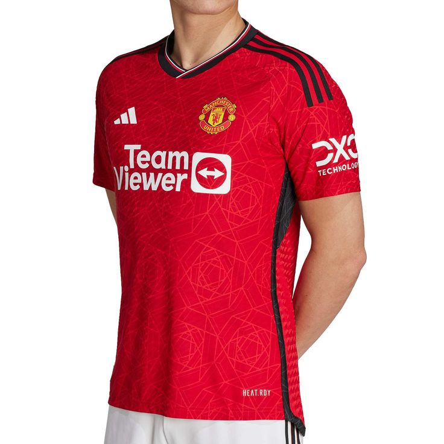

Camiseta Local Barcelona T. 24/25:
Primera Indumentaria del FC Barcelona oficial de la temporada 24/25. Confeccionada con materiales de alta calidad para ofrecer comodidad y durabilidad. ¡Un imprescindible para cualquier culé!

Camiseta Local Inter T. 24/25:
Vístete como los profesionales con la camiseta local del Inter de Milán para la temporada 24/25 con los imponentes colores Nerazzurros.

Camiseta Local Milán T. 22/23:
Conviertete en un futbolista con elegancia con la Primera Indumentaria Local del Milán de la temporada 22/23

Camiseta Local Manchester U. T. 23/24
Siente la emoción de Old Trafford con la camiseta local oficial del Manchester United para la temporada 23/24. ¡Glory, Glory Man United!